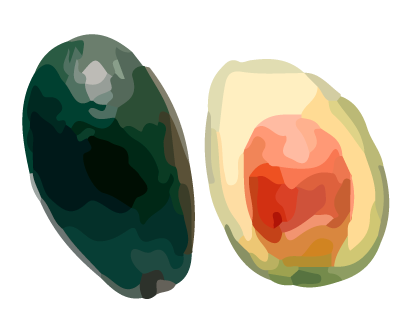

Las frutas
Son alimentos naturales, dulces y coloridos que provienen de las plantas. Aportan vitaminas, minerales, agua, fibra y energía esenciales para el crecimiento y desarrollo saludable.
¡Veamos el mapamundi!
¡Siempre ténlos presentes!
¡Haz clic en el botón!